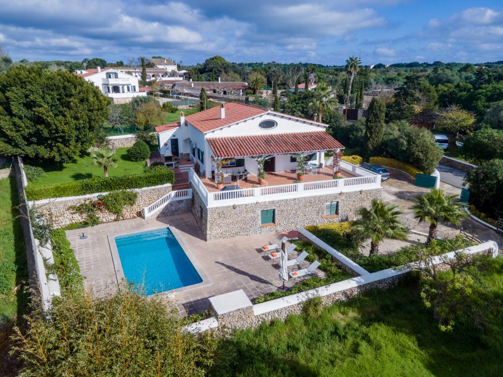

€980.000
L'Argentina, Alaior, Menorca, Spain
Open the listingDesign-forward old-with-new: exposed dry-stone ground floor under whitewash upper, dark green shutters, landscaped lawn and a generous built private pool — no immediate neighbours on 2,500 m². Punches above typical Alaior/Argentina pool-villa pricing. Distinct from board alaior (€980k / 552 m² / 3,032 m²) and alaior-gardens-02pxm9 (€940k).
Opened 12 Sep 2026. Asking 980.000 €. 5/3, ~2,500 m² plot, 250 m² basement garage (boat/vehicles), elevated dining terrace, off-street parking, maintained to high standard. Habitable now.